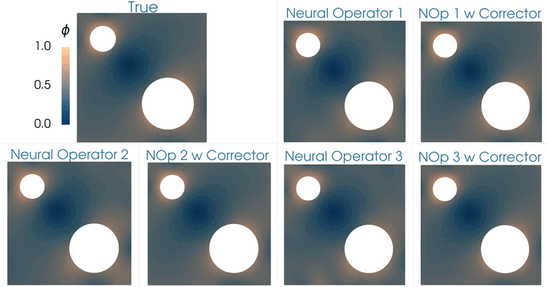

Abstract
This work focuses on developing methods for approximating the solution operators of a class of parametric partial differential equations via neural operators. Neural operators have several challenges, including the issue of generating appropriate training data, cost-accuracy trade-offs, and nontrivial hyperparameter tuning. The unpredictability of the accuracy of neural operators impacts their applications in downstream problems of inference, optimization, and control. A framework based on the linear variational problem that gives the correction to the prediction furnished by neural operators is considered based on earlier work in JCP 486 (2023) 112104. The operator, called Residual-based Error Corrector Operator or simply Corrector Operator, associated with the corrector problem is analyzed further. Numerical results involving a nonlinear reaction–diffusion model in two dimensions with PCANet-type neural operators show almost two orders of increase in the accuracy of approximations when neural operators are corrected using the correction scheme. Further, topology optimization involving a nonlinear reaction–diffusion model is considered to highlight the limitations of neural operators and the efficacy of the correction scheme. Optimizers with neural operator surrogates are seen to make significant errors (as high as 80 percent). However, the errors are much lower (below 7 percent) when neural operators are corrected.
Publication
Computer Methods in Applied Mechanics and Engineering
|  |
| Topology optimization of the diffusivity field in a nonlinear diffusion model. Neural operator and neural operator with corrector employed as a surrogate of the forward model. |
 |
| Comparing the optimizers of the topology optimization problem for different cases (1) true forward model, (2) neural operator surrogate of the forward model, and (3) neural operator with corrector. |